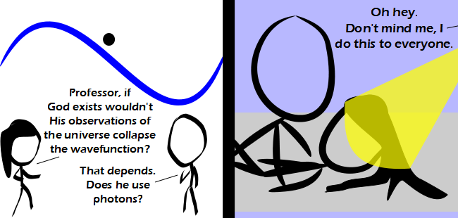

Comic JK 747
When I Feel Like It
⇤
<
?
>
⇥

⇤
<
?
>
⇥
Forum
.
RSS
.
Digg
.
Facebook
.
Reddit
.
Twitter
.
Stumbleupon
Enter your thoughts on number 747 here. Please, no spamming, trolling, or observing. Judging by the focal point of the rays, god must be about 10 cm from the edge of the picture. >Or there is some dark matter around the edges, distorting their path. >... omnipresence What's going on in the second panel? > Me with your mother. EXPLAIN! SHIFTLOCK! >Human observation of anything that has a wavefunction (i.e. everything) is often limited to probing it with a photon and detecting the way it behaves. This is known to 'collapse the wavefunction', that is, putting it in a different state from how it was to start with. As such, observation affects the observed and this gives us the uncertainty principle. Now, the joke - at first, the student asks whether observation of everything by an omniscient being affects the state of the universe by this rule. The professor suggests that said being would do this if he were using photons for the observation. We are then led to a humourous panel where you see God is watching people have sex and shining a torch on them to 'observe them'. >>Nonsense. That is clearly a flashlight. >>>Torch=flashlight >>>>Except that you do not need to turn them off soon after you turn them on, so flashlight is a misnomer. This happened last time I was banging your mother.